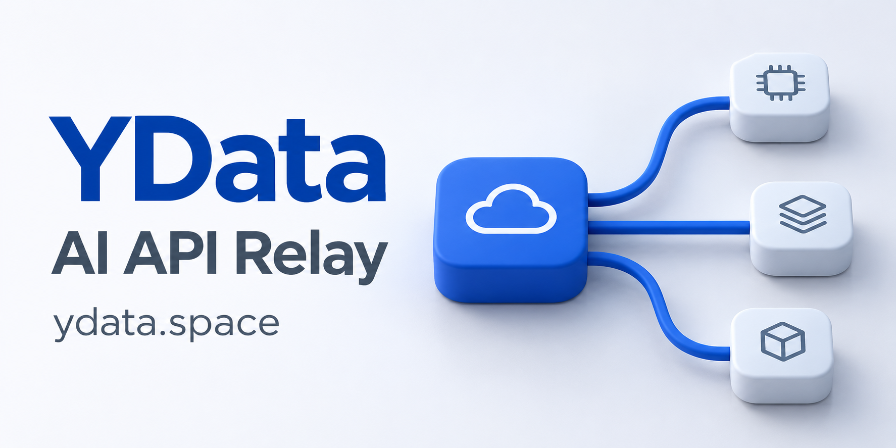

本地开发
git clone https://github.com/YuXing-Community/cloudai.git
cd cloudai
./scripts/dev.sh all注册并进入个人空间
新数据库的第一个注册用户自动成为系统管理员。
添加模型服务
在「空间配置 → 模型管理」填写服务地址、凭据与模型 ID。
创建助手并发起会话
配置提示词、选择模型，按需添加工具和知识库，再发送第一条消息。
自托管 AI 应用平台
CloudAI 将模型、工具、知识库和会话记录放在同一个工作空间。创建 AI 助手，接入业务工具，再通过评测与人工审核持续改进回答。
Vue 3 + Spring Boot 3 + FastAPI
使用自己的模型服务，数据存储在自己的部署环境。
OpenAI 兼容接口、Responses、Anthropic
MCP、OpenAPI、知识库与可复用技能
会话记录、模型评分、人工审核
功能与使用方式
适合希望自托管 AI 应用、连接现有业务系统，并保留完整执行记录的开发者与技术团队。
配置与运行
为每个助手设置提示词、模型、工具和知识库。配置支持版本管理，可复制、导入导出，并按空间组织和授权共享。
在会话中查看流式回复、工具执行过程和生成文件。遇到问题时，可以回到对应会话检查输入、输出及执行步骤。
工具与技能
通过 MCP 或 OpenAPI 接入外部工具。技能包支持文件夹与 ZIP 上传、版本管理及跨空间共享，凭据集中加密存储。
查看工具接入示例知识与文件
上传文档后，通过 BGE 模型生成向量并存入 Milvus，同时生成关键词索引。文件中心统一查看上传文件与会话产物。
向量模型使用 BAAI/bge-small-zh-v1.5，512 维。
任务与消息
使用 cron 安排周期任务，或通过飞书长连接和 Webhook 发起会话。多个助手可以通过任务看板分工，执行记录沿用统一的会话机制。
空间与权限
通过空间管理成员、角色和访问权限。分别配置模型服务、工具、知识库与运行环境，并查看模型用量和执行记录。
会话评测与人工标注
选取已完成的会话，由指定模型评分并给出修改建议。审核人员可以复核评分、标注问题，或直接对原始会话填写意见。
支持手动、定时和会话完成后自动触发。也可以使用指定模型重放用户输入，再评测新的回答。
阅读评测实现结果包含分项评分、问题说明、修改建议和建议回复。人工审核支持评分、标签、评论、修正回复及 CSV 导出。
技术架构
Java 后端管理业务数据与权限，Python 执行器负责模型和工具调用。会话输出通过 HTTP / SSE 传回浏览器。
Vue 3 / TypeScript / Vite
配置、会话、评测与管理Java 17 / Spring Boot 3
权限、调度与数据存储FastAPI / Python 3.12
模型、工具与文档向量化用户、配置、会话和评测结果
知识库文档的向量与检索
技能、文档、文件与会话工作目录
后端与执行器共享 data/。Docker 部署的数据库与向量服务数据保存在 deploy/volumes/。迁移环境时，需要同步数据库和对应文件。
在空间内添加模型服务地址、凭据和模型 ID，再为助手选择模型。支持配置上下文窗口、输出上限及价格，用于运行和用量统计。
部署与上手
准备 JDK 17+、Node.js 18+、Maven、uv 和 Docker。启动脚本会启动 MySQL、Milvus、执行器、后端与前端。
首次运行需要下载依赖和 BGE 向量模型。请先启动 Docker，本地脚本也支持通过 Colima 启动容器环境。
查看完整准备说明git clone https://github.com/YuXing-Community/cloudai.git
cd cloudai
./scripts/dev.sh all新数据库的第一个注册用户自动成为系统管理员。
在「空间配置 → 模型管理」填写服务地址、凭据与模型 ID。
配置提示词、选择模型，按需添加工具和知识库，再发送第一条消息。
仓库提供完整的 Docker Compose 配置，默认通过 5573 端口访问。执行器镜像面向 Linux AMD64，使用 CPU 版 PyTorch。
先按照 README 生成 deploy/.env，配置数据库密码、加密密钥、内部令牌和公开访问地址，再执行以下命令。升级时保留现有配置与数据。
docker compose --env-file deploy/.env \
-f deploy/compose.yml config --quiet
docker compose --env-file deploy/.env \
-f deploy/compose.yml up -d --build \
--wait --wait-timeout 300当前实现范围
每个会话使用独立工作目录和进程组，文件类工具限制在工作目录内。当前运行环境采用本地进程隔离，容器级隔离与出站网络控制需要进一步接入。部署时应根据工具权限与使用人员配置访问范围。
评测会调用配置的模型服务。启用重放时会重新执行用户输入，并可能再次调用工具。使用包含写入操作的工具时，应先确认重放适用范围。
云日志查询已实现阿里云 SLS。火山云 TLS、华为云 LTS 的查询接口仍待实现。记忆 Provider、API Keys 和迁移导入页面当前为待开发功能。
后端启动时执行建表脚本，新版会补建评测任务、批次、结果和人工审核表。升级前请备份 MySQL 与文件目录。已有模型等级值会保留，新配置使用 low、medium、high、xhigh、max。
文档与交流
从部署文档开始，按需阅读各模块实现。反馈问题时，请附上复现步骤、运行环境和经过脱敏的错误日志。
在 B 站观看 CloudAI 项目介绍，结合资料文档了解项目。
感谢 YDATA AI 对 CloudAI 项目的支持。

YDATA AI 是一个 AI 模型 API 中转站，提供 OpenAI 兼容接口、API 令牌管理、模型与价格查询，以及客户端接入指引。
可用模型、接入方式和计费信息可在官网查看。
访问 YDATA AI